아바(ABBA)의 페르난도(Fernando) 가사 해석 - 뜻 밖의 저항 가요
게시: 2018-02-06T22:35:34+09:00
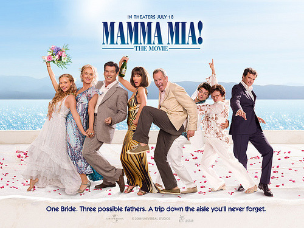
'맘마미아'라는 영화는 스웨덴 출신의 전설적인 팝 그룹 아바(ABBA)의 대표곡들을 모아서, 뮤지컬로 제작한 것입니다. 영화를 보면서, 그 가사의 내용과 영화 줄거리를 정말 잘도 끼워맞췄구나라고 감탄을 했었습니다.
아바는 70~80년대 초까지 활동했던 그룹이라서, 저는 중학교 정도 때 주로 그 노래를 들을 수 있었습니다. (지금도 형편없습니다만) 그때 영어 실력으로는 가사는 거의 들을 수가 없었지요. 저는 중학생 때 생각하기를, '나중에 대학가면 이런 노래 가사도 다 알아들을 수 있을 정도로 영어 실력이 좋아지겠지' 라고 생각했더랬습니다. (그러나 현실은 OTL)
최근에 본 그 '맘마미아'라는 영화 때문에, 문득 생각이 나서 아바의 히트송 CD를 찾아서 퇴근 시간에 들어보았어요. 지금 들어도 노래가 다 좋더군요. 그런데, 가만 보니까, 영화 속에서 왠만한 노래들은 거의 다 나왔는데, 아바의 대표적인 명곡 중 하나인 '페르난도 (Fernando)'가 빠졌더군요. 그 생각을 하면서 '페르난도'의 가사를 유심히 듣다 보니, 그 가사가 예전에 제가 영어 실력이 더 나빴을 때 막연히 생각했던 그런 종류의 가사가 아니었습니다.
저는 그냥 페르난도라는 남자와 뜨거운 밤을 보낸 여자가 '사랑은 깨어졌지만 그래도 후회하지 않는다'는 뭐 그런 내용의 가사인 줄 알았는데, 전혀 그렇지가 않았습니다. 어쨌거나, 좀 나아진 영어 실력으로도 100% 다 알아듣지는 못해서, 집에 와서 인터넷으로 뒤져보니 가사 내용이 이랬습니다.
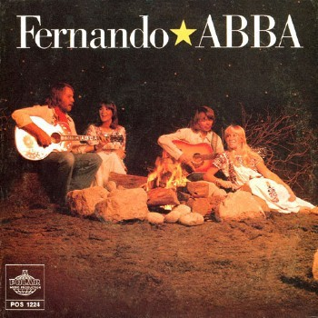
"Fernando"
Can you hear the drums Fernando?
북소리가 들리니, 페르난도 ?
I remember long ago another starry night like this
지금처럼 별이 빛나던 오래전 밤이 생각나는군.
In the firelight Fernando
불빛 속에서 페르난도 자네는
You were humming to yourself and softly strumming your guitar
부드럽게 기타를 튕기며 나지막히 콧노래를 불렀지
I could hear the distant drums
내겐 머나먼 북소리가 들려왔어
And sounds of bugle calls were coming from afar
집합 나팔 소리도 멀리서 들려왔었지
They were closer now Fernando
이제 그들이 더 가까이 온 것 같았어, 페르난도
Every hour every minute seemed to last eternally
매 순간이 영원처럼 길게 느껴졌었지
I was so afraid Fernando
난 정말 무서웠어, 페르난도
We were young and full of life and none of us prepared to die
우리는 모두 젊음과 희망으로 가득찬 나이였고, 죽을 준비가 되어 있지는 않았지
And I'm not ashamed to say
이런 고백한다고 부끄럽지는 않아
The roar of guns and cannons almost made me cry
그때 총과 대포 소리에 겁에 질린 난 울기 직전이었어
There was something in the air that night
그날 밤 분위기에는 그 무엇인가가 있었지
The stars were bright, Fernando
별은 정말 밝게 빛났어, 페르난도
They were shining there for you and me
자네와 나를 위해 빛나고 있었지
For liberty, Fernando
그리고 자유를 위해서도, 페르난도
Though we never thought that we could lose
우리가 패배할 거라는 생각은 못했지만
There's no regret
후회는 없어
If I had to do the same again
또 같은 상황에 처한다면
I would, my friend, Fernando
친구, 난 다시 싸울 거야, 페르난도
Now we're old and grey Fernando
이제 우리는 노인이 되었네 페르난도
And since many years I haven't seen a rifle in your hand
자네가 손에 총을 쥔 것을 본 것도 한참 전의 일이야
Can you hear the drums Fernando?
북소리가 들리니, 페르난도 ?
Do you still recall the fateful night we crossed the Rio Grande?
우리가 리오 그란데 강을 건넜던, 그 불길했던 밤이 생각나니 ?
I can see it in your eyes
난 자네 눈빛에서 아직도 읽을 수 있어
How proud you were to fight for freedom in this land
자네가 이 땅의 자유를 위해 싸울 수 있어 얼마나 자랑스러워 했는지 말일세
후렴

(노래와 동영상을 듣고 싶으신 분은 https://youtu.be/dQsjAbZDx-4 클릭)
이건 전쟁에 대한 노래더군요. 오래 전의 전쟁에 참전했던 친구들이, 패배했던 전투의 기억을 상기하며 부르는 노래입니다.
(이런 댄스 그룹이 전쟁 노래를 불렀다는 것이 믿어지십니까 ?)
이 노래의 배경이 된 전쟁은 과연 어떤 것이었을까요 ? 친구의 이름이 페르난도라는 것과, 저 리오 그란데 강이라는 지명을 보면 쉽게 이해하실 수 있을 것입니다. 바로 멕시코와 미국간에 있었던 전쟁에 대한 것입니다. 그런데 저 가사를 보면, 주인공과 그의 친구 페르난도는 리오 그란데 강을 건넜던 모양이군요 ? 리오 그란데 강은 미국과 멕시코의 국경선이고, 지금도 수많은 밀입국자들이 밤에 몰래 건너는 강입니다. 저 가사를 보면 멕시코군이 리오 그란데 강을 건너 북진했던 경우도 있었던 모양이지요 ? 과연 그랬을까요 ?
아시다시피, 원래 캘리포니아와 네바다, 유타, 아리조나, 텍사스 등 미국 남서부 지방 대부분의 땅은 미국 땅이 아니었습니다. 미국이 팽창하면서 무력으로 빼앗은 땅이지요. 그 전에는 누구의 땅이었을까요 ? 글쎄요, 임자가 없는 땅이라는 주장도 있습니다만 일반적으로는 멕시코 땅으로 인정되었습니다.
1846년부터, 미국은 캘리포니아 일대에 대해 영토적 야심을 가지고 '탐험' 명목 하에 군사적 긴장을 불러일으키고 있었습니다. 또 상당수의 미국 민간인들도 캘리포니아의 자연 조건에 이끌려 이주를 해왔습니다. 사실 그 지방 일대에는 광활한 면적에 비해 인구 밀도 자체가 워낙 낮았기 때문에, 법적으로는 어떨지 몰라도 멕시코가 무력으로 지킬 수 있는 땅은 아니었지요.
아무튼 미국은 '멕시코와 미국의 국경선은 리오 그란데 강'이라고 주장하며, 1846년 당시 멕시코 영토이던 텍사스의 리오 그란데 강 북쪽에 Fort Texas라는 요새를 구축하기에 이릅니다. 이 요새를 아리스타(Arista) 장군의 멕시코군이 포위하면서 충돌이 시작됩니다. 미국은 재커리 테일러(Zackery Taylor) 장군이 기병과 포병을 이끌고 포트 텍사스를 구원하러 나섰고, 아리스타 장군의 멕시코군도 기다리지 않고 그를 요격하려 북진합니다.
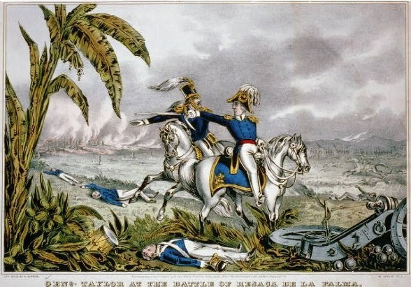
(이 전투는 Resaca de la Palma 전투로 기록됩니다.)
그러나, 아무래도 멕시코군은 미군의 상대가 되질 못했습니다. 결국 전투에서 패배한 멕시코군은 미군의 추격을 받으며 어지러이 흩어져 리오 그란데 강을 건너 남쪽으로 후퇴합니다. 이렇게 허겁지겁 강을 건너는 과정에서 많은 멕시코 병사들이 익사했다고 합니다. 그러니까 저 노래 가사 중에, "우리가 리오 그란데 강을 건넜던 그 불길했던 밤" 이라는 구절이 설명이 되는 것이지요.
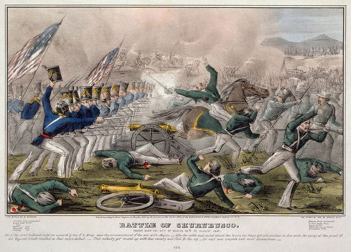
(대부분의 전투는 그림에 나온 것과 같은 양상을 보였습니다...)
전체적인 전쟁 결과는 어떻게 되었을까요 ? 안 봐도 비디오 아니겠습니까 ? 전쟁의 시작이 되는 이 전투만 봐도 아실 수 있듯이, 멕시코군은 연전연패를 거듭하다가, 결국 수도인 멕시코시티까지 점령당한 뒤, 결국 미국이 원하던 대로 현재의 미국-멕시코 국경이 정해집니다. 이 전쟁과 또 그보다 2년 전의 텍사스 독립 전쟁을 통해서, 멕시코는 전체 영토의 2/3를 잃는 치욕을 당합니다. 멕시코가 패배한 원인은 여러가지가 있겠습니다만, 멕시코 정부의 분열과 전쟁 한가운데 벌어진 쿠데타 등 멕시코 자체적인 문제가 많았습니다.
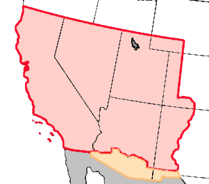
(이 1846~1848년 전쟁으로 멕시코가 빼앗긴 땅. 그 옆의 텍사스는 2년전에 이미 빼앗겼지요.)
하지만 이렇게 대략적인 전쟁 결과를 보고 나면, 저 ABBA의 노래 가사 중에 전혀 이해가 안가는 부분이 있습니다.
I can see it in your eyes
난 자네 눈빛에서 아직도 읽을 수 있어
How proud you were to fight for freedom in this land
자네가 이 땅의 자유를 위해 싸울 수 있어 얼마나 자랑스러워 했는지 말일세
대체 저 전쟁의 어느 부분이 '자유를 위한 싸움'이었을까요 ? 왜 페르난도는 이렇게 굴욕 뿐이었던 전쟁에 참전했던 것을 자랑스러워 하는 것일까요 ?
애초에 멕시코 땅이던 캘리포니아에 미국인들이 몰려와 살기 시작할 때, 멕시코 정부는 이들에게 2가지를 강요한 것이 있었습니다. 하나는 카톨릭으로 개종하라는 것이었고, 다른 하나는 바로 '노예제 금지'였습니다. 첫 부분은 다소 정당한 것이 아니라는 생각이 듭니다만, 두 번째는 바로 이 전쟁의 핵심이었습니다.
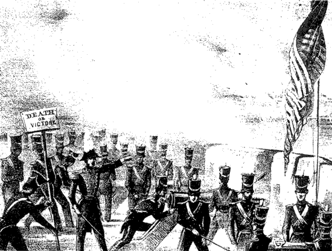
(Fort Texas에서의 포위전... 왼쪽의 팻말은 사실 Death or Victory가 아니라, "노예가 아니면 죽음"을 입니다.)
당시 미국은 이미 북부의 공업주의자들과, 남부의 농업주의자들로 서서히 분열되고 있었습니다. 그리고 남부의 농업이 발전하기 위해서는 두가지가 필요했는데, 바로 새로운 토지와 노예였습니다. 당시 미국의 정당 중 민주당(Democrats)은 남부의 노예 농장주들의 이익을 대변했고, 휘그당(Whigs)은 미국의 발전은 영토의 확장보다는 산업의 내실을 다져야 이룰 수 있다는 입장이었으며, 무엇보다 노예제도에 반대해습니다. 그리고, 당시 멕시코 전쟁을 일으킨 포크(James Polk) 대통령은 바로 민주당 출신이었습니다.
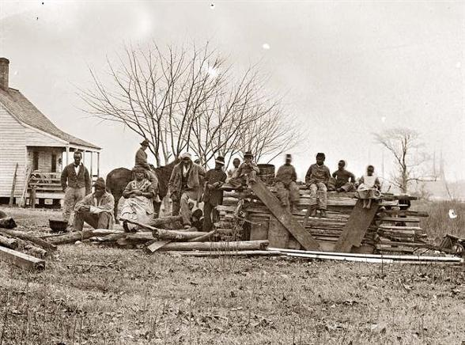
(이런 노예들로 캘리포니아를 가득 채우는 것, 그것이 바로 American Dream !)
간단히 말하면, 미국은 캘리포니아와 텍사스, 네바다 등의 광활한 영토를 새로 획득하여, 여기에 새로 수많은 아프리카 흑인 노예들을 끌고 와서 노예 농장을 만들고 싶어 했습니다. 멕시코인들은 그에 반발한 것이었고요. 실제로 이 분쟁 지역에는 멕시코인들이 그렇게 많이 살고 있지는 않았는데, 이들은 미국의 점령에 반발하여, 전쟁 중 역시 소수였던 점령군에게 저항하는 무장 봉기를 일으키기도 했습니다.
대다수의 멕시코인들은 이런 전쟁의 배경을 알고 싸웠을까요 ? 아마 그렇지 않았을 것입니다. 전쟁 중 미군 중에도 약 10% 정도의 탈영병이 나왔습니다만, 사실 미군은 그 이전의 평화 시기에도 탈영률이 약 14%일 정도였기 때문에, 탈영이 거의 없었다고 해도 무리가 없었습니다. 반면에, 멕시코군은 탈영이 매우 심각했습니다. 당시 미국인들은 미국이 대서양에서 태평양까지 확장되어야 한다는 '명백한 운명'이라는 팽창주의에 젖어 있었던 것에 비해, 멕시코인들은 상당히 소박하게 살았던 모양입니다. 많은 멕시코 병사들은 자신의 마을과 농토에서 곧장 징집죈 농민들로서, 머나먼 캘리포니아가 노예 농장이 되건 관광지가 되건 사실 큰 관심이 없었습니다. 그래서 탈영률이 미군에 비하면 훨씬 많았습니다. 가령 미군이 가장 고전했던 전투인 부에나 비스타(Buena Vista) 전투의 경우를 보면, 멕시코의 산타 아나(Santa Anna) 장군이 출발할 때는 2만명의 병사들을 거느리고 있었으나 별로 길지도 않은 행군 끝에 전투를 벌이려고 보니 남은 1만 5천명 정도 밖에 남아있지 않을 정도였습니다.
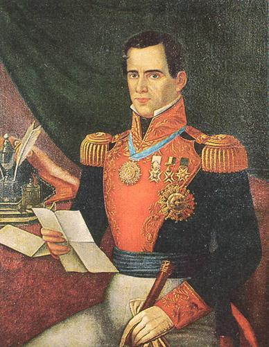
(영웅인지 간웅인지 독재자에 배신자인지... 산타 아나 장군)
그런 와중에, 정말 자유의 땅인 캘리포니아가 노예 농장이 되는 것을 막기 위해, 끝까지 미군에게 저항했다면, 그거야 말로 정말 스스로 생각해도 자랑스러운 일이었을 것입니다. 노래 가사대로, 비록 졌더라도, 다시 그런 일이 생긴다면 다시 싸울 만한 일이지요.
당시 미국에서도 이 전쟁의 부당성에 반대하고 나섰던 사람들이 꽤 많았습니다. 주로 휘그당 정치인들로서, 그 중 하나가 바로 젊은 시절의 링컨 대통령이었습니다. 링컨은 분쟁 대상이었던 영토가 이미 수세기 동안 멕시코의 땅이었던 곳이라면서, 미국인들에게는 이미 넓은 영토가 있으며, 더 많은 땅에 대한 욕망에서 비롯된 이 전쟁에 분명히 반대했습니다. 전쟁이 끝난 뒤, 미국 영토로 새로 편입된 캘리포니아나 네바다 주에 대해서, 휘그당원들은 '새로 편입된 영토에서는 노예제를 금지한다'라는 법안을 만들려 했지만, 결국 실패하고 말았습니다.
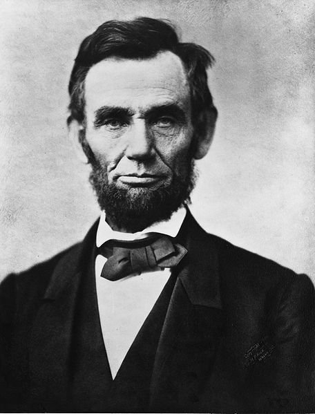
(미국의 세종대왕, 에브럼즈 링컨)
링컨 뿐만이 아닙니다. 훗날 남북 전쟁에서 북군 사령관을 지냈고 훗날 미국 대통령까지 된 율리시즈 그랜트(Ulysses S. Grant) 장군도 젊은 시절 이 전쟁에 참전했었는데, 그는 회고록에서 '이 전쟁이야 말로 부당함의 극치로서, 강대국이 약소국을 침탈하는, 전형적인 유럽 군주국들의 전쟁과 같은 것이었다'며, '남북 전쟁은 사실 이 전쟁의 결과에서 비롯된 것으로서, 미국의 전횡에 대한 일종의 천벌'이라고 썼습니다.
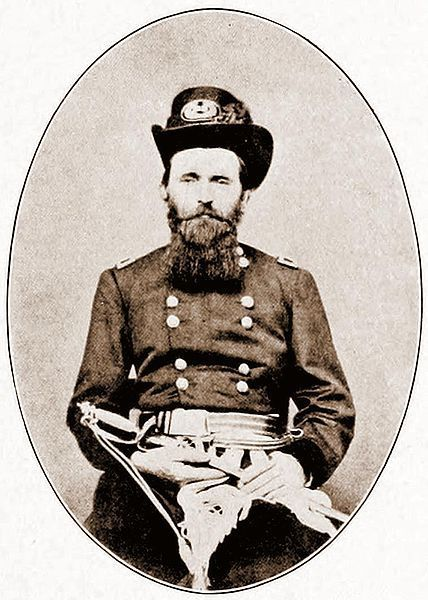
(1861년, 준장이던 Ulysses S. Grant)
그 뿐만 아닙니다. 유명한 미국의 문필가인 헨리 데이빗 소로우(Henry David Thoreau)도 이 전쟁에 강력 반발했습니다. 하지만 장군도 정치가도 아닌 그로서는 전쟁에 반대할 만한 별다른 수단이 없었지요. 그래서 그는 노예제를 위한 전쟁에 쓰이게 될 세금을 낼 수 없다며 세금을 내지 않았다가 감옥에 갇히는 신세가 되기도 했습니다. (결국은 그의 친척이 세금을 대납해주어 풀려났다고 합니다.) 그는 결국 이 전쟁에 대한 역겨움의 표시로서, 유명한 '시민 불복종(Civil Disobedience)'이라는 책을 썼습니다.
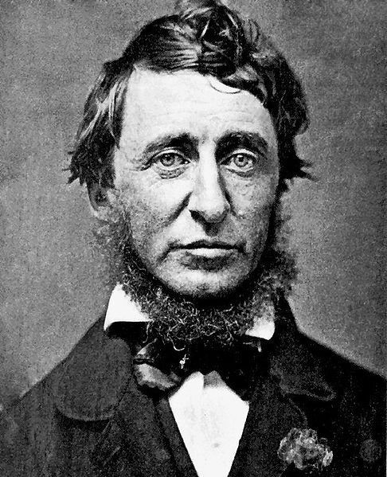
(Henry David Thoreau, 제가 학교 다닐 때 영문학과 여학생들이 많이 들고 다니던 Walden이라는 책의 저자입니다.)
이 전쟁이 있은지 약 130년 뒤에, 스웨덴의 팝 그룹이 'Fernando'라는 노래를 미국에서 발표하게 되었습니다. 이 노래는 미국에서는 물론, 세계적으로도 엄청난 히트를 기록했습니다. 과연 미국인들은 이 노래에 담긴 역사를 알고 이 노래에 열광했을까요 ? Google에서 ABBA, Fernando, Mexican-American War를 넣고 검색해보면, 글쎄요, 아주 많은 사람들이 그에 얽힌 역사를 잘 알고 있는 것 같지는 않더군요.
(원래 Fernando는 스웨덴 솔로 활동 시절 프리다가 부른 히트곡이었습니다.)
그런데 왜 ABBA는 이런 가사의 노래를 만들었을까요 ? 글쎄요, 그에 대해서는 저도 잘 모르겠습니다. 이 노래는 원래 Frida (검은 머리 여자)가 스웨덴에서 싱글로 활동할 때 불렀던 곡을 다시 만든 것으로서, 원래 스웨덴어로 된 노래 가사는, 제가 영어를 잘 몰랐던 시절에 가졌던 느낌 그대로, Fernando라는 연인과 헤어진 다음의 심경을 노래한 것이었다고 합니다. 어쩌다가 노래 가사를 이렇게 의미심장한 것으로 바꾸었는지는, ABBA 만이 알고 있겠지요. 참고로, Fernando라는 이름은 '용기를 내다' 라는 뜻을 가지고 있다고 합니다. 참 여러모로 의미심장하네요.